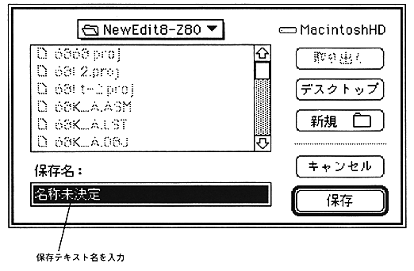

Return to previous page ｜ Return to menu ｜ Go to next page
-
Save As ...
- Writes the currently edited text to a file with a name different from the window title. The standard file save dialog for Macintosh is displayed. Specify the file name in this dialog box. After saving, text editing will not be interrupted and the window will remain intact.

-
Paper settings ...
- Set the paper size and printing options.
The dialog displayed on the screen differs depending on the type of printer selected in “Selector” in the Apple menu, so please refer to the manual for the printer you are using.
-
Print (Shortcut: Command-P)
- Prints out the contents of the currently active text window.
-
Exit (shortcut: Command-Q)
- End SDSS. The currently open text window and project window are automatically closed. However, if there is a change, a confirmation dialog will be displayed as with “Close”.
Return to previous page ｜ Return to menu ｜ Go to next page